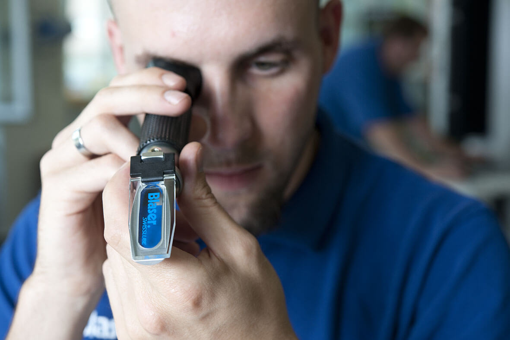

Engineering support that cuts cost per component
We go beyond supplying tools — we help you choose, prove and optimise them on your own machines.
Customised Tooling Proposals
Send your drawing — we propose the complete tooling solution, including special tools where standard ones fall short.
New Project Tooling
Tooling layouts and selection for new components and production lines, ready for trial and PPAP.
Cycle-Time Optimisation
We trial better grades, geometries and parameters on your machines to reduce cycle time and cost per component (CPC).
Application Support
On-site help with tool setting, troubleshooting tool life, chip control and surface finish problems.
Coolant Management
Blaser Swisslube fluid selection, concentration monitoring and sump care for longer tool and fluid life.
Grinding & Deburring
Diamond, CBN and abrasive solutions from Wendt and CUMI for precision grinding and clean deburring.
The liquid tool matters as much as the cutting tool
With Blaser Swisslube fluids, customers see 20–25% higher tool performance — plus cleaner machines and a safer workplace.
- Enhanced productivityHigher cutting data and longer tool life.
- Machine & material safetyProtects spindles, slideways and components.
- Human safety complianceSkin-friendly, low-odour formulations.

From drawing to production in four steps
Understand
We study your component, material, machine and current process.
Propose
A tooling proposal with standard and customised tools and expected savings.
Trial
On-machine trials to prove tool life, cycle time and quality.
Support
Ongoing supply, regrinding advice and continuous improvement.
Let's optimise your next job
Book a visit from our application team.